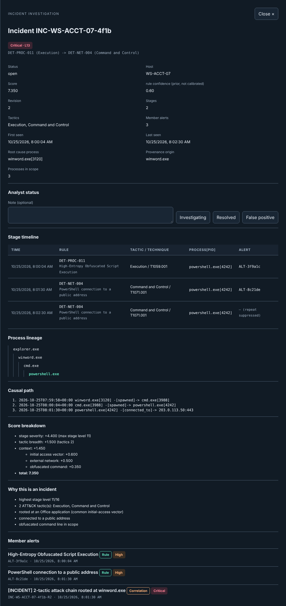

Windows agent — Officer
Native telemetry across ETW, Sysmon, Event Log channels, the USN journal, registry and file integrity, with a durable encrypted delivery journal and authorized response execution.
Panopticon collects real host telemetry from Windows and Linux endpoints, correlates it into explainable alerts and incidents, and lets an analyst authorize one of seven typed response actions back on the endpoint — with every step recorded in a verifiable audit trail.
One pipeline, five stages. Detection and execution are deliberately separated: the engines only recommend, and only the endpoint agent ever acts — after the Manager authorizes it.
Officer reads ETW, Sysmon and native Windows sources; the Linux sensor uses eBPF, fanotify and audit netlink.
Records are journaled on disk and sent over HTTPS with at-least-once delivery. The Manager acknowledges only after committing them.
A worker runs rules, sequence and threshold logic, then correlates detections over a provenance graph into incidents.
Recommendations map onto a closed set of seven actions. Two read-only collections may run automatically; everything else waits for an analyst.
The agent verifies the target, executes, and reports a typed result. Each transition joins a hash-chained audit trail.
The console shows live pipeline health, the alert feed, correlated incidents with their causal path and itemized score, and the response queue where analysts approve or reject actions.


Each component lives in its own repository with its own CI. They meet only at versioned wire contracts, never at each other's source trees.
Native telemetry across ETW, Sysmon, Event Log channels, the USN journal, registry and file integrity, with a durable encrypted delivery journal and authorized response execution.
panopticon-sensord: eBPF CO-RE, fanotify and audit collection, an on-disk WAL, signed policy and commands, and self-integrity monitoring.
69 ATT&CK-mapped rules, provenance-graph correlation into incidents, behavioral rarity scoring and an experimental ML scorer. It detects and recommends — never executes.
Pure domain logic: the seven-action vocabulary, authorization tiers, recommendation translation and the response lifecycle state machine.
Enrollment, ingestion, the detection worker, response authorization and dispatch, signed evidence custody and the audit chain.
Analyst views for alerts, incidents and response decisions, served by a standard-library Python server with no build step.
Canonical schemas and golden fixtures that every producer and consumer is tested against in CI.
22 architecture and UML diagrams, with a CI gate that checks them against the source of the repositories they describe.
Every repository labels what is implemented, unit tested, verified on a real VM or still pending — and links to the evidence.
Exactly seven typed actions: KILL_PROCESS, COLLECT_PROCESS_INFO, COLLECT_NETWORK_CONNECTIONS, COLLECT_FILE, QUARANTINE_FILE, ISOLATE_HOST, RELEASE_HOST_ISOLATION. There is no path to arbitrary remote execution.
Only COLLECT_PROCESS_INFO and COLLECT_NETWORK_CONNECTIONS may auto-run. Kill, quarantine, file collection and isolation always require an analyst's explicit authorization.
Process-targeted commands carry the process start time, and on Windows the boot binding, so an agent refuses to act if the PID now belongs to a different process.
The Linux sensor executes only Manager-signed (ES256) commands. Investigation evidence is signed with endpoint-enrolled keys and verified on every retrieval, and every decision and custody event is appended to a SHA-256 hash-chained audit ledger.
Panopticon is a capstone project, not a commercial or certified product. It follows a vertical-slice roadmap: telemetry → detection → alert first, then response authorization and execution, then breadth.
Claims on this site are summaries. The authoritative, evidence-backed status lives in each repository.
Where to find the evidence
Windows agent — capability matrix
Linux sensor — handoff and validation status
Manager — response engine state
Contracts — compatibility matrix